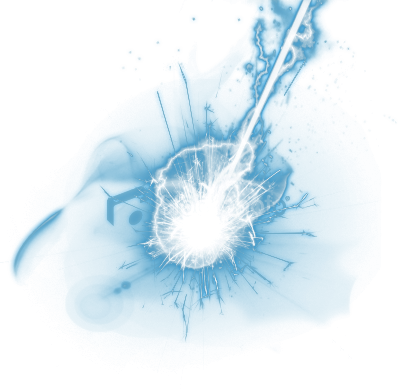
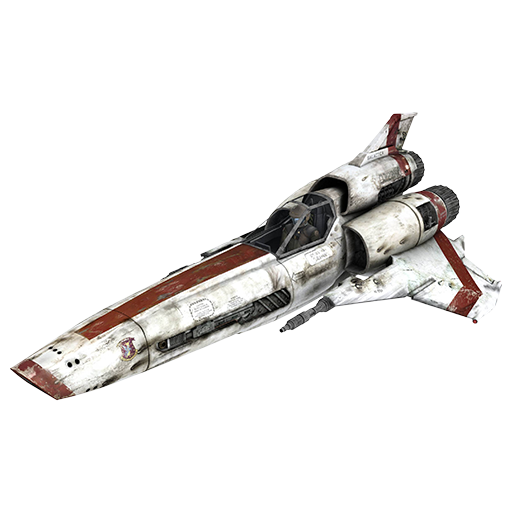
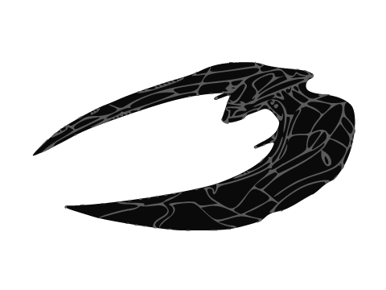
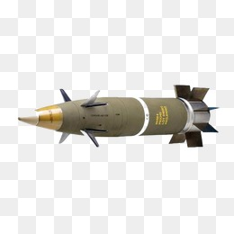
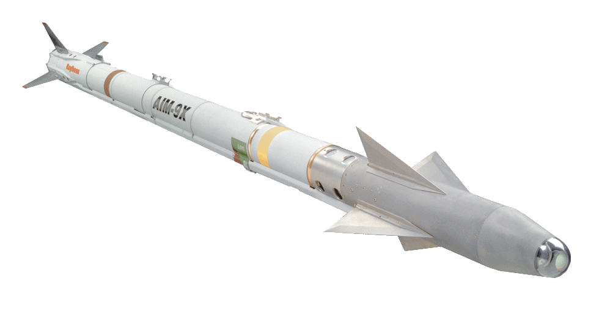

Welcome to The Space Odyssey Game
Meet the characters
BattleStar Galactica
- is the last remaining Battleship of the human civilization.
You are the last hope for the human civilization to survive and flourish again. Do you have what it takes to raise the human civilization or you will bring them do their doom?
Cylon BaseStar
- is the Cylons best Battleship. Your goal is to find the surviving human civilization and finish it. According to the intel what's left of them is on the Galactica Battlestar. Find them and destroy them in order to secure the flourish of the Cylons.
In game Weapons
Every character is able to pick up one of the available weapons. The weapons are randomly located all over the map. After picking up a new weapon, the previous weapon will be left behind.
 - Lasers are the default weapons with which each ship is equiped, they can inflict 5 points damage.
 - Vipers are the humans attack fighter ships, they can inflict 10 points damage.
 - Cylon Vipers are the cylon attack fighter ships, they can inflict 10 points damage.
- Ballistic rockets are being used on both sides in the war, they can inflict 15 points damage.
 - Missles rockets are being used on both sides in the war, they can inflict 15 points damage.
 - Nuclear rockets are the ultimate weapon on both sides in the war, they can inflict 20 points damage.
Player movement
In order to move a player simply click on the player which move is it and the available tiles on the board will be highlighted. To move the player just click on one of the available tiles.
Note that since the human civilization are fighting for survival they will have the first move.
Game Rules
1. Each character is able to move three steps horizontally or vertically at a time. To see whose turn is next, just look on the very top of the game screen.
2. The blocking mode reduces the damage taken by 50%.
3. As soon as one of the character's health bar has reached 0 the game is over, to play again please refresh the page and enjoy!.